美股 盘中V起来，发生了什么！多空不对称改善，后市看法！SOXX第一和第二目标位！本期重点9 组 · 25 条盘初急跌与午盘 V 形回拉1通胀、经济增长与失业救济3午盘急拉的几条可能线索3订单簿、信用利差与 AI 仓位3英伟达负面信用观察与担保风险3多空不对称开始改善4SPY 和 QQQ 的反弹确认条件2SOXX 两档反弹目标与熊市压力3台积电和 Netflix 持仓观察3盘初急跌与午盘 V 形回拉费半盘中跌近 8%，收盘跌幅收窄到约 0.65%。1 条半导体回补大部分盘中跌幅市场盘前已出现恐慌，低开后又快速下探。标普盘中最多跌约 3%，纳指 100 跌约 4.5%，费城半导体跌近 8%。临近中午指数迅速拉回，费半收盘只跌约 0.65%，形成日内 V 形走势。▶回听01:23—02:20对应正文 ↗通胀、经济增长与失业救济数据未显著改变 12 月加息预期，三季度增长上修。3 条核心 PCE 同比升至 3.3%10 月 PCE 环比增速由 0.5% 降至 0.3%，同比由 3.7% 升至 3.8%。核心 PCE 环比 0.3%，与预期和上月一致；同比由 3.1% 升至 3.3%，高于 3.2% 的预期。节目观察到，货币市场对 12 月加息 25 个基点的定价仍约 98%，也开始出现少量押注按兵不动的交易。▶回听02:58—04:04对应正文 ↗三季度 GDP 年化增速上修至 4.3%三季度 GDP 年化增速由 3.4% 上修至 4.3%，投资和消费支出均上调。按节目引用的拆分口径，AI 相关投入贡献超过 65% 的增长。我关注的是，如果这项投资大幅减速，其他需求能否接棒。▶回听04:10—05:19对应正文 ↗初请和续请人数双双下降截至 11 月 21 日当周，初请失业救济人数由修正后的 20.3 万降至 18.9 万，低于预期的 20 万。续请由 179.2 万降至 169.7 万，也低于预期的 172 万。▶回听05:27—05:50对应正文 ↗午盘急拉的几条可能线索事件时间接近，暂时没有证据把反弹归因于其中一项。3 条第一条线索是太空数据中心消息急拉大约发生在 11:50 至 12:20。我把 FCC 授权 SpaceX 部署太空数据中心相关卫星的消息列为市场讨论的第一条线索。消息时间接近拉升，仍缺少可确认因果关系的证据。▶回听05:59—06:45对应正文 ↗第二条线索是纳指看跌期权获利平仓节目提到，有投资人已经获利平掉剩余纳指 100 看跌期权，当时约持有 25% 现金，其他仓位主要为多头。随着 VIX 上升，看跌期权变得昂贵，继续做空的潜在收益空间也需要重估。▶回听06:47—07:37对应正文 ↗第三条线索是美元兑日元同期波动美元兑日元在类似时段大幅波动，外汇市场的一种解释是日元套利交易的变化放大了纳指从低点反弹的动能。三条线索可能共同作用，现有信息很难确定其中一条是主要触发因素。▶回听07:48—09:01对应正文 ↗订单簿、信用利差与 AI 仓位信用利差和仓位数据尚未确认中期信心改善。3 条急拉更像空头回补和短线交易我的判断是，空头获利回补与短线资金更可能解释这次日内反转。当天价格波动很大，机构订单簿仍然很薄，主动买入的力度并未与价格波动同步放大。▶回听09:08—09:55对应正文 ↗三类信用利差仍高超大规模数据中心的信用利差再创高点，芯片设备制造商的利差也升至新高。覆盖范围更广的数据中心篮子盘中创新高，尾盘虽回落，仍处高位。这些信用市场信号尚未确认基本面信心恢复。▶回听10:00—11:01对应正文 ↗AI 股票净敞口下降，空头占比升高节目图表显示，AI 股票净敞口占全球净敞口的比重降至 2025 年 9 月以来最低，多头市值与空头市值之比降至 2024 年 10 月以来最低。AI 股票空头占全球空头的比重升至多年高位。短线反弹可以发生在这种仓位下，中长期信心修复仍需要时间。▶回听11:13—12:38对应正文 ↗英伟达负面信用观察与担保风险评级仍为 AA，后续观察治理整改及融资影响。3 条英伟达获列负面信用观察据节目援引的报道，标普全球评级把英伟达的 AA 发行人及高级无抵押债务评级列入负面信用观察。若管理与治理缺陷持续，未来 90 天内可能下调，通常预计最多一级；如果后续信息显示声誉或业务前景受损，幅度可能不同。▶回听12:52—14:26对应正文 ↗董事会独立性和关键人物风险是观察重点标普关注董事会结构、长期任职董事的独立性、关键人物风险和潜在出口管制问题。我会观察公司能否在观察期内改善治理。消息发布后英伟达 CDS 创出新高，市场也会重新审视由它担保的数据中心项目。▶回听14:29—15:43对应正文 ↗评级变化更可能先传导给依赖担保的新云节目引用的预测是英伟达到 2028 财年预计有超过 2400 亿美元现金，三季度末已披露的担保额约 1180 亿美元，此外还有供应、云与股权承诺。我认为如果只下调一级，英伟达自身偿债压力有限；使用其担保的 GPU 数据中心则可能面对更高借贷成本、渠道收紧或再融资困难。这仍取决于观察期内是否真正降级。▶回听15:45—18:05对应正文 ↗多空不对称开始改善VIX 仍在约 28，空头回补与 12 月初潜在买盘改变了供求。4 条VIX 从约 35 回落到约 28VIX 自日内约 35 回落，仍在约 28。我把突然反转视为短期博弈，抛售未必结束，但多空资金流的不对称性已开始变化。▶回听18:25—19:08对应正文 ↗季节性买盘临近，对冲基金仍观望一部分空头逐渐回补，12 月 ETF 与家庭长期投资者可能带来季节性买盘。对冲基金此前撤出后仍多在观望，主动加仓意愿有限。▶回听19:09—20:10对应正文 ↗继续下跌会消耗季节性买盘据节目引用的高盛模型，若标普继续向下，趋势卖盘会抵消部分 12 月初买盘。模型预计重现此前连续大规模系统性抛售的可能性较低，因为部分系统资金已经卖出。▶回听20:10—21:06对应正文 ↗若回补持续，追逐 Delta 可能延续日线反弹若空头继续平仓并带动资金追逐 Delta，标普日线可能出现更明显的 V 形修复。极端恐惧时买入的看跌保护很贵，回补和价格追逐能加快反弹。这一走法仍要由随后几个交易日的强弱验证。▶回听21:07—22:06对应正文 ↗SPY 和 QQQ 的反弹确认条件SPY 需在 12 月第一周放量突破 753 美元，QQQ 结合自身区间观察。2 条SPY 放量过 753 美元才确认更强走法我用 SPY 作观察标尺。若 12 月第一周快速、放量站上 753 美元，资金主动追涨的迹象会更明确，也更有可能走出 V 形的节前行情。突破前我仍以箱体震荡看待，越靠近上沿越谨慎。▶回听22:10—23:10对应正文 ↗QQQ 用 585 美元与 700 美元以上区间对照纳指仍可与标普对照，但波动弹性不同。节目里用 585 美元附近作为 QQQ 的下沿参考，反弹时价格在约 633 至 636 美元，上沿仍在 700 美元以上。▶回听23:14—23:38对应正文 ↗SOXX 两档反弹目标与熊市压力第一档 137–144 美元，第二档从约 163 美元起，180–181 美元附近仍有压制。3 条SOXX 第一档看 137 至 144 美元半导体进入技术性熊市后需要时间修复。我先看 SOXX 的第一档反弹区间 137 至 144 美元。从节目图中的 128 美元附近到下沿约有 7% 至 8% 的空间，普通的空头回补就可能推动价格往这个区间走。▶回听24:09—25:08对应正文 ↗第二档约 163 美元起，需要信用与基本面配合较乐观情形是 SOXX 走到约 163 美元，进入图上 163 至 180 美元的上方区域。从节目中的市价起算，到 163 美元的幅度接近三成。信用和基本面要有更实质的改善，才更有机会走到第二档。▶回听25:10—25:53对应正文 ↗180 至 181 美元是更高一级的趋势关口暂以约 118 美元为反弹起点，180 至 181 美元附近仍是较强压力。突破后才有条件考虑半导体技术性熊市是否结束。若无法突破，或基本面继续恶化，仍按反弹情景处理。▶回听25:54—26:23对应正文 ↗台积电和 Netflix 持仓观察台积电出现第二次止跌雏形但未加仓，Netflix 等趋势线。3 条台积电回拉过快，我没有加仓台积电盘中反弹很快，没有给我充分的回踩确认。若再回踩到约 330 美元并出现可辨认的承接，我会考虑入场。尾盘突破横盘高点时已约 342 至 343 美元，我也没有买。▶回听26:27—27:44对应正文 ↗第二次止跌有雏形，等节后确认台积电已有第二次止跌的雏形。开盘偏低，下影线短，形态仍有缺陷。我会等节后重新找买点，感恩节后的半日交易通常也不会动仓位。▶回听27:46—29:08对应正文 ↗Netflix 放量仍不足，继续等趋势线Netflix 当天放量可能混有节前期权平仓的影响。我对成交量仍不够满意，想再观察几天，看横盘能否消化压力并跨过下降趋势线。▶回听29:24—29:47对应正文 ↗这期涉及哪些股票与内容？NVDA主讲标普列入负面信用观察，跟踪评级及融资担保影响。SPY主讲观察 12 月第一周能否放量突破 753 美元。QQQ主讲下沿参考 585 美元，上沿在 700 美元以上。SOXX主讲第一档 137 至 144 美元，第二档从约 163 美元起。TSM主讲盘中回拉过快，未加仓；节后再观察回踩。NFLX主讲等待横盘消化后突破下降趋势线。背景提及：SPCX。市场指标：SPX、NDX、SOX、VIX、CDS。背景提及不代表对该股票展开分析。CHAPTER 01 · 回听 01:23盘初急跌与午盘 V 形回拉市场盘前已出现恐慌，低开后又快速下探。标普盘中最多跌约 3%，纳指 100 跌约 4.5%，费城半导体跌近 8%。临近中午指数迅速拉回，费半收盘只跌约 0.65%，形成日内 V 形走势。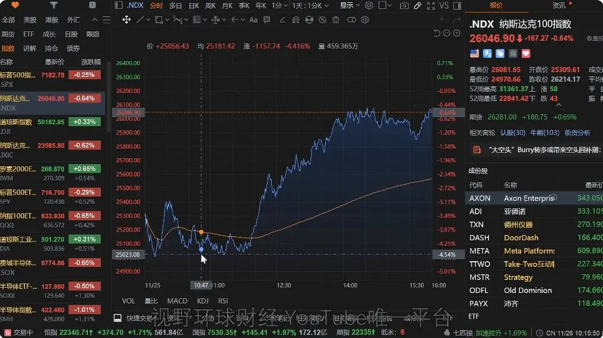放大查看 ↗纳斯达克 100 盘中低点与 V 形拉回原视频 01:39回听此处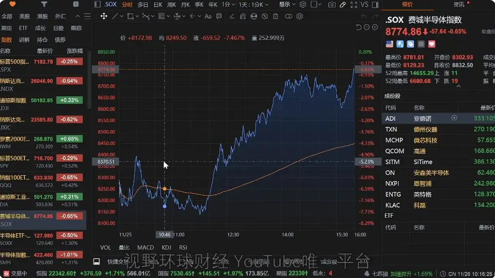放大查看 ↗费城半导体指数分时下探和尾盘收复原视频 02:15回听此处CHAPTER 02 · 回听 02:53通胀、经济增长与失业救济10 月 PCE 环比增速由 0.5% 降至 0.3%，同比由 3.7% 升至 3.8%。核心 PCE 环比 0.3%，与预期和上月一致；同比由 3.1% 升至 3.3%，高于 3.2% 的预期。节目观察到，货币市场对 12 月加息 25 个基点的定价仍约 98%，也开始出现少量押注按兵不动的交易。三季度 GDP 年化增速由 3.4% 上修至 4.3%，投资和消费支出均上调。按节目引用的拆分口径，AI 相关投入贡献超过 65% 的增长。我关注的是，如果这项投资大幅减速，其他需求能否接棒。截至 11 月 21 日当周，初请失业救济人数由修正后的 20.3 万降至 18.9 万，低于预期的 20 万。续请由 179.2 万降至 169.7 万，也低于预期的 172 万。CHAPTER 03 · 回听 05:51午盘急拉的几条可能线索急拉大约发生在 11:50 至 12:20。我把 FCC 授权 SpaceX 部署太空数据中心相关卫星的消息列为市场讨论的第一条线索。消息时间接近拉升，仍缺少可确认因果关系的证据。节目提到，有投资人已经获利平掉剩余纳指 100 看跌期权，当时约持有 25% 现金，其他仓位主要为多头。随着 VIX 上升，看跌期权变得昂贵，继续做空的潜在收益空间也需要重估。美元兑日元在类似时段大幅波动，外汇市场的一种解释是日元套利交易的变化放大了纳指从低点反弹的动能。三条线索可能共同作用，现有信息很难确定其中一条是主要触发因素。CHAPTER 04 · 回听 09:08订单簿、信用利差与 AI 仓位我的判断是，空头获利回补与短线资金更可能解释这次日内反转。当天价格波动很大，机构订单簿仍然很薄，主动买入的力度并未与价格波动同步放大。超大规模数据中心的信用利差再创高点，芯片设备制造商的利差也升至新高。覆盖范围更广的数据中心篮子盘中创新高，尾盘虽回落，仍处高位。这些信用市场信号尚未确认基本面信心恢复。节目图表显示，AI 股票净敞口占全球净敞口的比重降至 2025 年 9 月以来最低，多头市值与空头市值之比降至 2024 年 10 月以来最低。AI 股票空头占全球空头的比重升至多年高位。短线反弹可以发生在这种仓位下，中长期信心修复仍需要时间。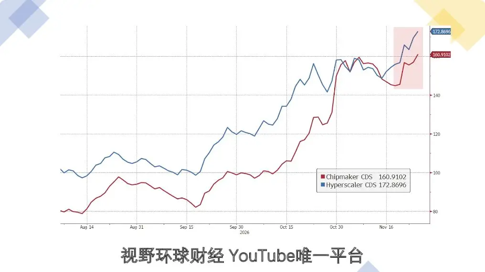放大查看 ↗超大规模数据中心与芯片设备信用利差原视频 10:16回听此处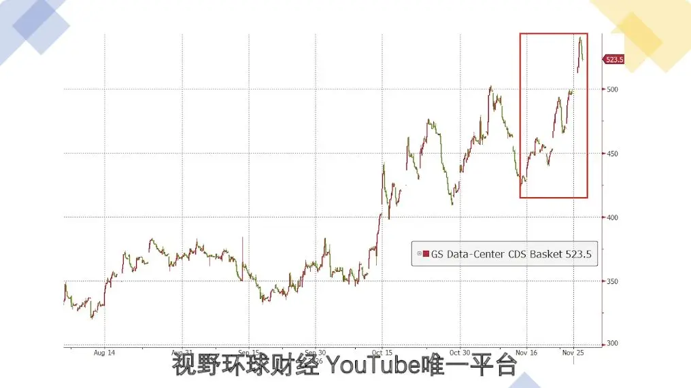放大查看 ↗数据中心整体 CDS 篮子与盘中高点原视频 10:54回听此处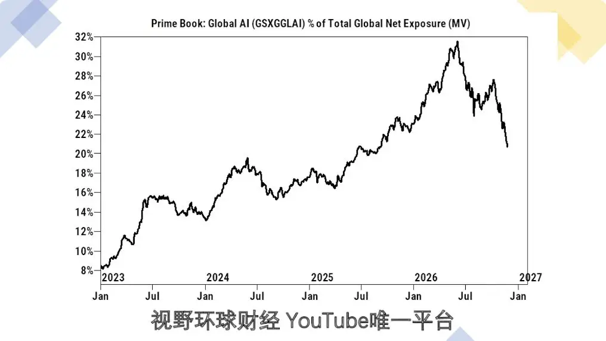放大查看 ↗AI 股票净敞口占全球净敞口的比重原视频 11:26回听此处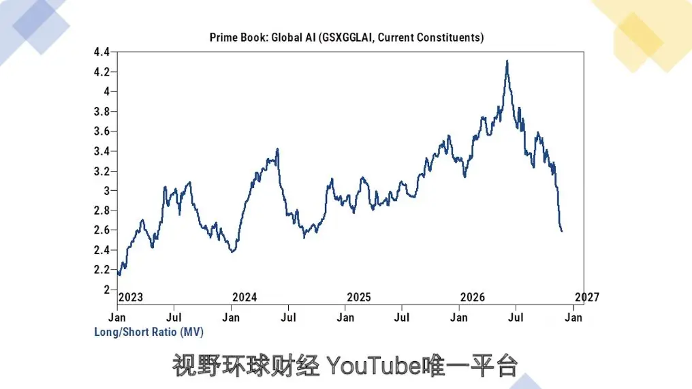放大查看 ↗AI 股票多头市值与空头市值之比原视频 11:40回听此处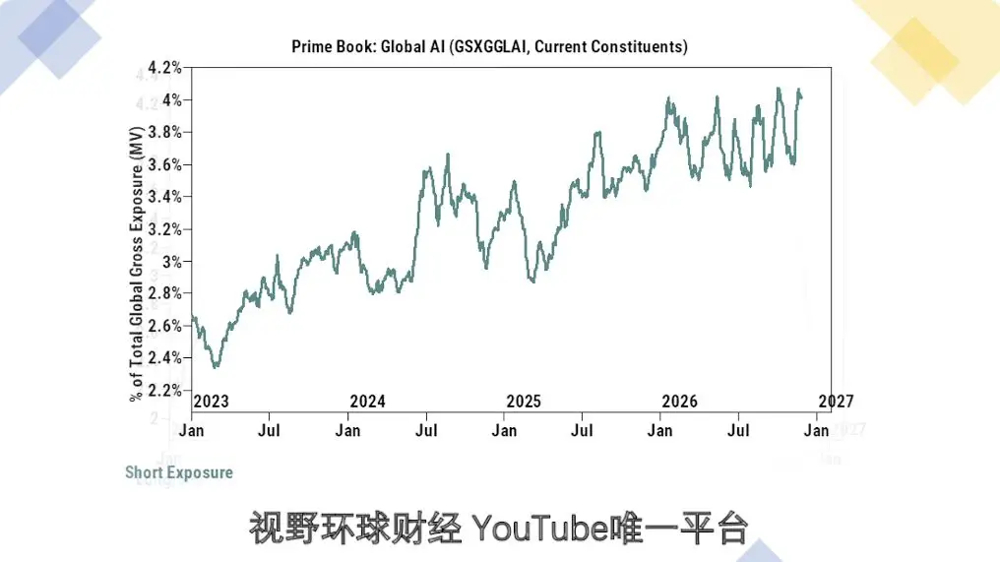放大查看 ↗AI 股票空头占全球空头的比重原视频 11:58回听此处CHAPTER 05 · 回听 12:39英伟达负面信用观察与担保风险据节目援引的报道，标普全球评级把英伟达的 AA 发行人及高级无抵押债务评级列入负面信用观察。若管理与治理缺陷持续，未来 90 天内可能下调，通常预计最多一级；如果后续信息显示声誉或业务前景受损，幅度可能不同。标普关注董事会结构、长期任职董事的独立性、关键人物风险和潜在出口管制问题。我会观察公司能否在观察期内改善治理。消息发布后英伟达 CDS 创出新高，市场也会重新审视由它担保的数据中心项目。节目引用的预测是英伟达到 2028 财年预计有超过 2400 亿美元现金，三季度末已披露的担保额约 1180 亿美元，此外还有供应、云与股权承诺。我认为如果只下调一级，英伟达自身偿债压力有限；使用其担保的 GPU 数据中心则可能面对更高借贷成本、渠道收紧或再融资困难。这仍取决于观察期内是否真正降级。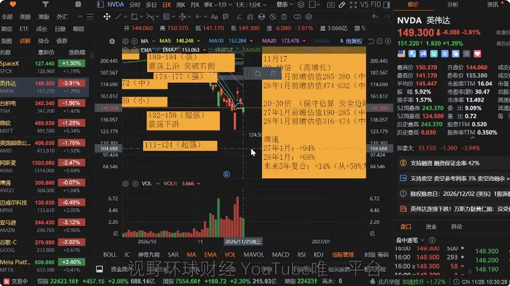放大查看 ↗英伟达日线和节目原始点位标注原视频 16:08回听此处CHAPTER 06 · 回听 18:10多空不对称开始改善VIX 自日内约 35 回落，仍在约 28。我把突然反转视为短期博弈，抛售未必结束，但多空资金流的不对称性已开始变化。一部分空头逐渐回补，12 月 ETF 与家庭长期投资者可能带来季节性买盘。对冲基金此前撤出后仍多在观望，主动加仓意愿有限。据节目引用的高盛模型，若标普继续向下，趋势卖盘会抵消部分 12 月初买盘。模型预计重现此前连续大规模系统性抛售的可能性较低，因为部分系统资金已经卖出。若空头继续平仓并带动资金追逐 Delta，标普日线可能出现更明显的 V 形修复。极端恐惧时买入的看跌保护很贵，回补和价格追逐能加快反弹。这一走法仍要由随后几个交易日的强弱验证。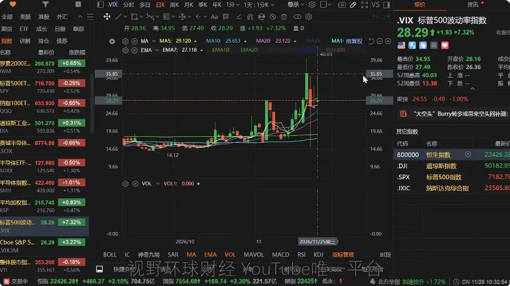放大查看 ↗VIX 自日内高点回落后的水平原视频 18:35回听此处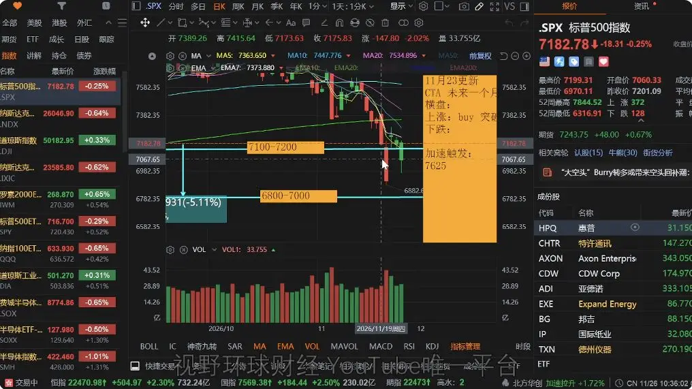放大查看 ↗标普 500 日线与反弹路径观察原视频 21:43回听此处CHAPTER 07 · 回听 22:08SPY 和 QQQ 的反弹确认条件我用 SPY 作观察标尺。若 12 月第一周快速、放量站上 753 美元，资金主动追涨的迹象会更明确，也更有可能走出 V 形的节前行情。突破前我仍以箱体震荡看待，越靠近上沿越谨慎。纳指仍可与标普对照，但波动弹性不同。节目里用 585 美元附近作为 QQQ 的下沿参考，反弹时价格在约 633 至 636 美元，上沿仍在 700 美元以上。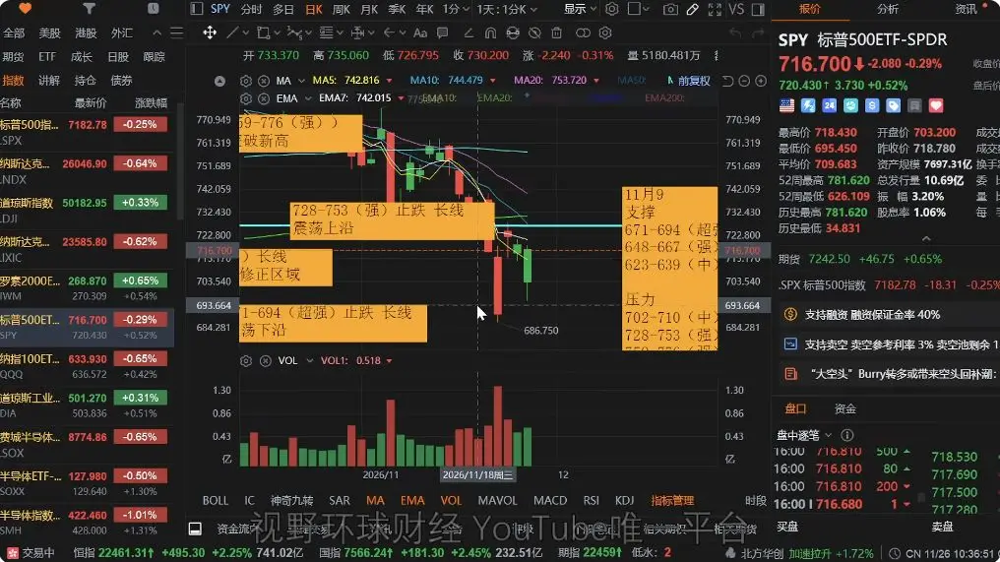放大查看 ↗SPY 震荡区间及放量突破观察位原视频 22:31回听此处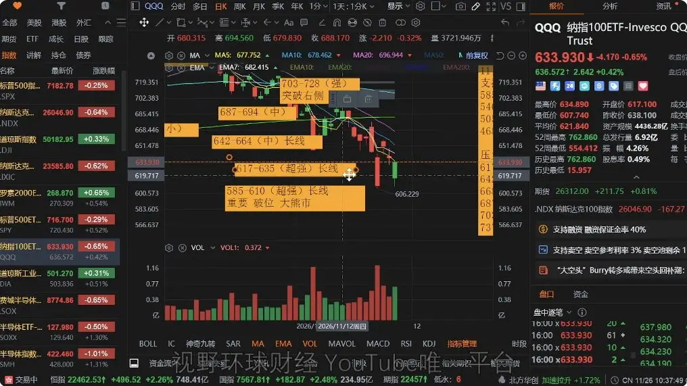放大查看 ↗QQQ 震荡上下沿与反弹位置原视频 23:31回听此处CHAPTER 08 · 回听 24:08SOXX 两档反弹目标与熊市压力半导体进入技术性熊市后需要时间修复。我先看 SOXX 的第一档反弹区间 137 至 144 美元。从节目图中的 128 美元附近到下沿约有 7% 至 8% 的空间，普通的空头回补就可能推动价格往这个区间走。较乐观情形是 SOXX 走到约 163 美元，进入图上 163 至 180 美元的上方区域。从节目中的市价起算，到 163 美元的幅度接近三成。信用和基本面要有更实质的改善，才更有机会走到第二档。暂以约 118 美元为反弹起点，180 至 181 美元附近仍是较强压力。突破后才有条件考虑半导体技术性熊市是否结束。若无法突破，或基本面继续恶化，仍按反弹情景处理。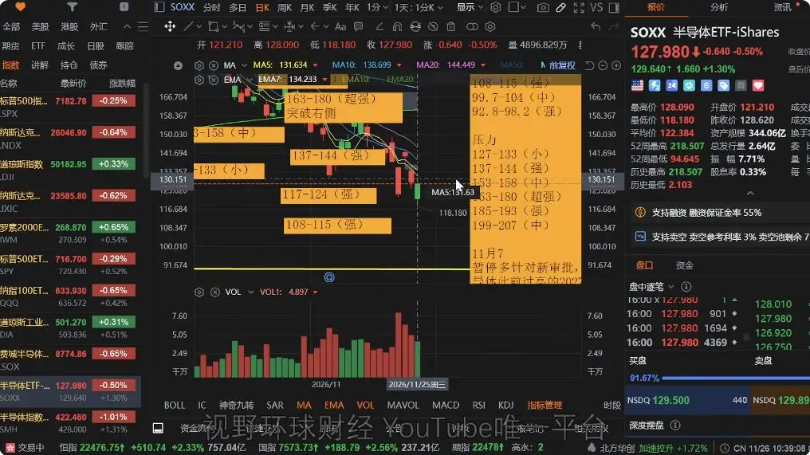放大查看 ↗SOXX 第一档 137 至 144 美元反弹区间原视频 24:49回听此处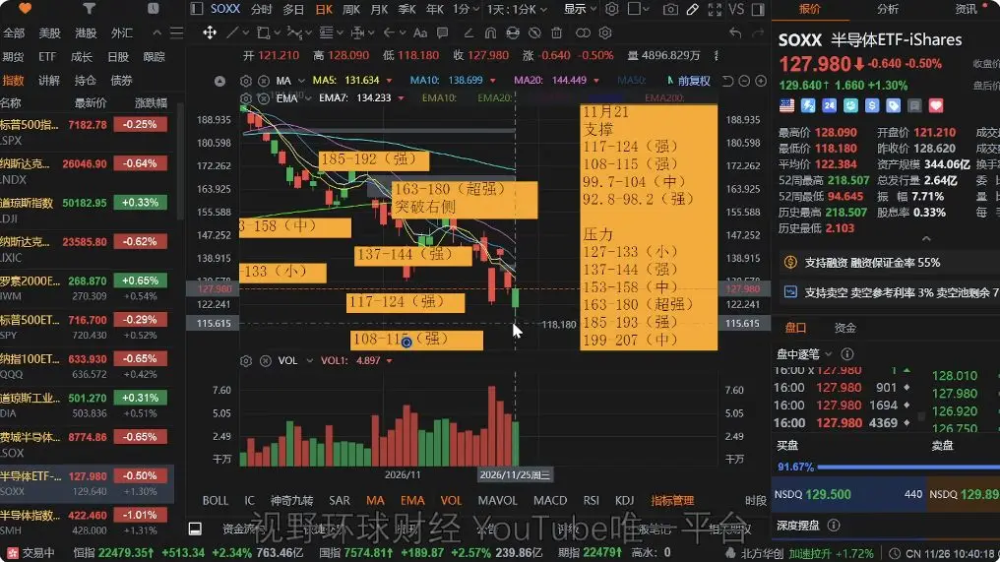放大查看 ↗SOXX 第二档和 180 至 181 美元附近压力原视频 25:59回听此处CHAPTER 09 · 回听 26:25台积电和 Netflix 持仓观察台积电盘中反弹很快，没有给我充分的回踩确认。若再回踩到约 330 美元并出现可辨认的承接，我会考虑入场。尾盘突破横盘高点时已约 342 至 343 美元，我也没有买。台积电已有第二次止跌的雏形。开盘偏低，下影线短，形态仍有缺陷。我会等节后重新找买点，感恩节后的半日交易通常也不会动仓位。Netflix 当天放量可能混有节前期权平仓的影响。我对成交量仍不够满意，想再观察几天，看横盘能否消化压力并跨过下降趋势线。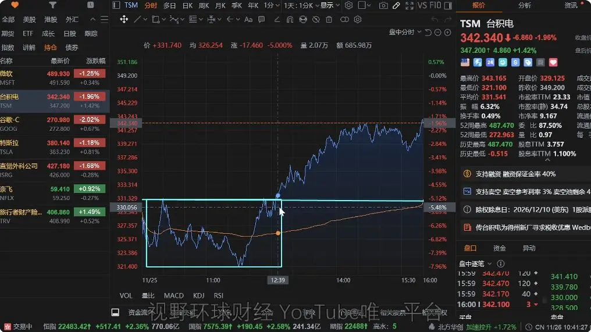放大查看 ↗台积电分时回拉及约 330 美元回踩观察位原视频 27:08回听此处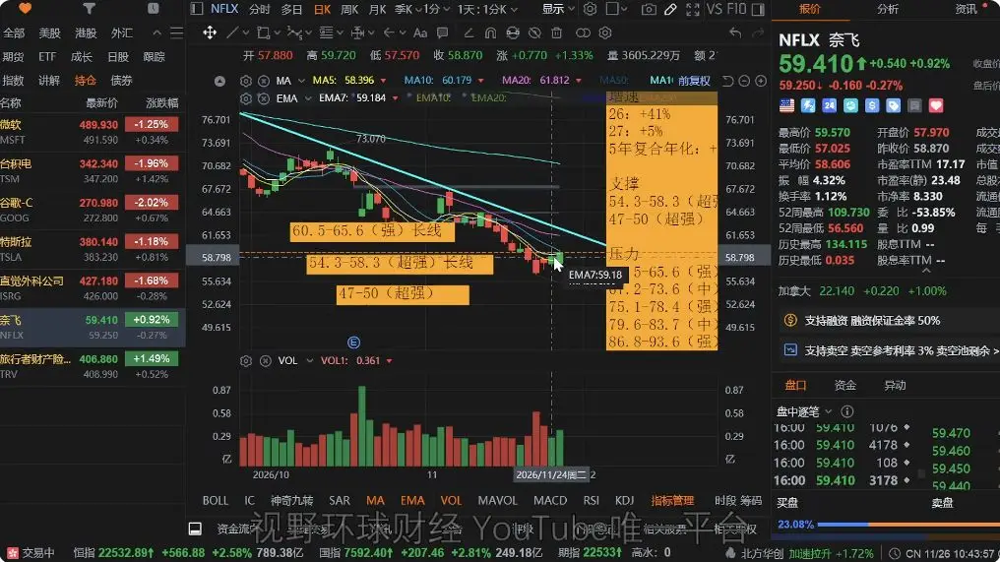放大查看 ↗Netflix 下降趋势线与支撑区间原视频 29:39回听此处SOURCE MATERIAL完整转录与回听原视频：美股 盘中V起来，发生了什么！多空不对称改善，后市看法！SOXX第一和第二目标位！机器原稿可能含同音字与数字单位错误，保留用于对照。播放00:0031:101×1.25×1.5×2×静音展开完整转录下载 TXT ↗下载 SRT ↗查找转录内容00:00大家好,欢迎回到视野环球财经,我是Ryno。现在是美东时间,26年11月25号,周三晚上的8点55分。00:09咱们节目开始之前,先说个通知。由于明天是感恩节,美股是休市一天,而且周五是只有半个交易日,所以周五的交易会非常的清淡。00:22通常基金经理今天就已经开始放感恩节的长周末了,所以正常情况下周五不会有太大的波动。00:30那么今天的收盘之后,本周的交易差不多就算是结束了,雏形已经出来了。00:37所以今天的节目也是本周的最后一期公共视频的节目。00:42那么咱们公共视频再见就是下个周一的盘后,所以提前祝大家感恩节长周末快乐。00:51另外这个星期本来是会员节目也会按照惯例停更一期,但是由于这个时间节点比较重要,我还是希望能够把三季度财报之后,标普和所有的板块的业绩调整情况,27年的前瞻交易区间,尽快更新给大家,免得大家是提醒掉的,过不好这个长周末。01:14所以本周的会员视频会正常更新。01:18好,通知讲完了,咱们开始说一下市场。01:23今天的这个市场是盘前的恐慌就开始加剧,是大幅低开,之后又是快速的下探一波。01:33标普的盘中今天是最多下探了三个点,纳指100今天的盘中最低的时候跌了差不多4.5%,费成半导体是更过分啊,今天是一口气盘中跌了近8%,感觉呢这个市场离崩溃就不远了。01:53不过大家看到啊,临近中午的时候,风云突变,市场开始大幅的拉升。02:00那么,截至到今天的收盘为止,指数是收回了绝大多数的跌幅,而且整个的费成半导体从负接近8%到只剩了0.65%,这个拉升幅度非常的快。02:14相当于呢,是一个日内的一个V型反转。02:20那么今天到底盘中发生了什么啊,后面会发生什么,包括半导体潜在的反弹的第一和第二的目标位。02:31等会咱们讲解啊,咱们在讲这些关键信息之前,先把这个数据给大家过一下,因为今天有几个重要的数据。02:40因为只有了解了基本面方面的东西,包括有一些更加宏观的像仓位上的东西,你可能才能够更加全面和客观的看待市场到底在发生什么。02:53好,咱们看一下今天的经济数据。02:59首先呢,是今天的10月份的PCE啊,PCE的环比增速从0.5降到了0.3,然后呢,同比增速是从3.7升到了3.8,核心的PCE呢,是环比增长0.3与预期一致,与上个月持平,同比增速是从3.1上升到了3.3,高于3.2的预期。03:23那么这一些数据啊,它没有对美联储的预期产生重大影响。03:29目前整个的市场货币市场预测呢,仍旧是整个在12月的加息25个基点的概率仍旧占到绝大多数啊,是98%。03:41所以呢,整个的市场来讲,今天没有出现重大的从预期上的一些变化。03:49反倒是要值得注意的是啊,今天出现了更多的不加息的预期啊,这种压注不加息啊,尽管概率非常的低,但是已经出现了美联储可能不会那么的硬。04:05好,那么这是第一个数据,好,看第二个数据。04:10第二个数据呢,是美国的三季度的整个的GDP的年化修正值啊,这一口气呢,从3.4修正到了4.3。04:22这个主要是受到投资和消费支出上调的推动,其中消费支出上调主要由其他的非耐用品,主要是什么,药品,还有休闲用品和车辆,还有呢,计算机软件及配件,以及汽油和其他能源商品的推动。04:45那么这个GDP上调更大的上调贡献,主要来自于人工智能的这个市场的这个投资。04:53GDP增长中超过65%的部分都和人工智能投资相关啊,所以人工智能投资浪潮就是现在美国GDP增长的大腿。05:04这一点呢,是已经正在发生的事情啊,所以这条大腿,假设未来没了,GDP会发生什么,其实大家心里也都明白啊,所以呢,就是市场现在有一个想法嘛,那么人工智能投资是不是真的大而不能倒。05:22好,然后呢,还有一个数据,是今天的初请事业。05:27初请事业呢,是截止到11月21号的当周,那么首次申请的人数呢,是降到了18.9万,较之前修正后的20.3万是减少了1.3万,低于市场预期的20万。05:41续请事业的人数呢,是从179.2万降到了169.7万,也低于之前预测的172万。05:51好,讲完了数据之后,咱们来讲讲今天的盘中的故事。05:59今天盘中到底发生了什么啊?06:03就是这一波拉升,大概在11点50到12点20分左右,大概这半个小时发生了什么事情?06:14目前的市场主要是有三个猜测,我之所以说是猜测,是因为时间点比较接近。06:21但是呢,任何一个单一原因,它又不足以有直接的证据链表明是它们造成的。06:30那么第一个猜测是,美国联邦通讯委员会FCC授权了SpaceX部署卫星构建太空数据中心。06:41说这个是导致市场快速拉升的原因。06:47第二个是Mike Boring,他表示他已经获利卖出了剩余的纳斯达克100指数的看跌期权,也就是看跌期权,他获利平仓了。07:01为什么获利平仓呢?因为他的观点是认为这个时候再往下走,包括像整个的put特别贵,很多人不会一定要接住做了,对吧?07:11所以因为VIX长得很多嘛,整个的获利空间有限,所以他就获利平仓了。07:18那么获利平仓之后,他说他持有差不多约25%的现金,目前几乎全部都持有的是多头头寸,把所有的空头都评完了,只剩多头投资了。07:32所以他说正在考虑投资并且持续的评估未来的做空机会。07:37也就是现在他认为差不多跌得七七八八了,反弹才能高空,现在是离场带着钱走人过感恩节的时候。07:48所以有一种猜测,说是他的消息导致大量的投机性做空者也是跟随获利平仓。07:55所以本来这个流动性就不太好,这个背景就推动了市场的一些初步的启动,那么就产生了后面的一系列的连锁反应。08:06这个当然不是说这个拉伸都是由他们造成的,但是它可能起到了推波助澜的作用。08:13好,还有第三个,第三个主要是出现在外汇市场。08:20外汇市场的每日啊,今天的盘中呢,实际上在类似的时间也出现了巨大的价格波动。08:30所以从外汇市场的看法上,认为日元套利策略完美地从纳指一百指数的低点引爆了上涨动能。08:40所以这是另外的一个理由,就是在日美的这个套利交易上也是推不住了。08:48这几个时间点呢,发生的情况都是在今天的行情行情过程中啊,所以你说他们是原因也是,你说但是他们是唯一的确定性原因很难判断,对吧?09:00但是不管怎么样,结果确实是今天出现了一轮非常快速的拉升。09:08好,那我说一下,我怎么看。09:13我个人呢,把这一波日内的反转啊,我更多的看成是空头获利回补,投机性的短期资金的推动,不是基本面和信心的极大改善。09:30我给大家讲一讲几个理由,为什么我这么去看待啊。09:34第一个理由是,今天机构活动与市场波动的幅度不成正比,因为今天的机构的订单博仍旧非常的薄,说明什么呢?09:44说明机构主动参与的意愿,它还是没那么强啊,就是主动型的这种买入意愿没有那么强。09:54其次,好,我们来看这几张图。10:00如果真的是半导体基本面和信心的改善,10:04咱们应该看到的是数据中心的CDS下降,而不是上涨,对吧?10:11但你看这张图,超大规模数据中心的信用违约互换,今天价格是再次创下新高,就是那根蓝色的线啊,蓝色的线再创新高,10:23包括设备芯片,设备制造商今天的这个CDS也是攀升到了新高,这个不合理的吧?10:33这个你不能说这个市场不担心了吧,它反而更担心了。10:37好,这是第一个啊,这是超大规模数据中心。10:41你从全部的数据中心上来看,各种各样的都加上,你会发现一样的情况也出现了,也是CDS创下了盘中的新高,尽管尾盘有所回落,但是仍旧是一个很高的高点。10:58你不能说他们的信心已经恢复了吧,对吧,还没有反应在资金面上啊,所以这是第一点。11:04好,那么我们再往下看一看,那人工智能现在的多空的情况,仓位的情况,是不是开始变得极其乐观了呢?11:14看三张图表。11:17这张图表呢,是人工智能的股票啊,进场口总额,占到全球的进场口总额的百分比,已经降到了2025年9月以来的最低。11:30当然,这个是因为市值在下降吧,所以这个可以理解哈,好,我们再往下看。11:38这个就是人工智能股票的多空比率,它能够直接反映人工智能目前的一个状况吧。11:46它多投市值与空投市值之比,处于2024年10月以来的最低水平。11:53这个就更直观,对吧?11:55好,还有一个很直观的,就是纯空投。12:00人工智能股票的空投的头寸,占到了全球总空投头寸的比例,已经达到了多年来的新高,持续在走高。12:10所以,这一些呢,我们说都是从基本面上去看,现在的这个信息啊,它似乎呢,你要从长期上,中长期上,你让它一下恢复,没那么容易。12:21所以我更多的把它判断为是一个短期的投机性资金的推动,不管是由于平仓,回补平仓发生的,12:30还是由于投机性多投进来抢仇发生的,它是一个很短期的一个变化,不是长期基本面和信心的改善。12:39好,还有,还有,其实啊,今天有一个非常不利的消息,和英伟达有关系。12:52英伟达呢,实际上今天,呃,我相信大家看新闻应该都发现了啊,就是,呃,这个呃,这个就是关于标普啊,是把英伟达的信用评级,现在列入了负面信用观察名单。13:11那么这个对于它来担保的新闻数据中心来讲啊,是很不友好的,好,我们还是看一下它的这个整个的,呃,这个理由吧,对照的这个看比较会简单一点哈。13:26彭博社的报道说呢,标普全球评级已经将英伟达的AA发行人评级,那么这个评级是标普全球第三高的啊,及其高级无抵押债务的AA评级列入负面信用观察名单,那么列入负面信用观察名单,反映了近期事态发展的演变。13:45以及如果我们确定英伟达的MG框架仍然存在缺陷,我们可能会在未来90天内下调英伟达的评级。13:56标普表示说,近期一些广为人知的事件引发了人们对英伟达管理和治理框架的有效性的质疑,包括董事会的独立性和关键人物风险,例如首席执行官黄仁勋的离职和回归。14:11如果标普认定这些缺陷仍然存在,则可能在未来90天内下调英伟达的评级,并预计任何降级幅度都将限制在一个级别,14:22除非调查或披露的信息表明英伟达的声誉或未来业务前景受到损害。14:29那么标普评级给出的核心逻辑简单讲,围绕着首席执行官的新闻以及有关潜在出口管制违规行为的质疑,14:40暴露了英伟达管理和治理框架中的漏洞,尤其是在董事会结构组成和有效性方面。14:48我们认为,有些董事会成员的长期任职可能损害了他们的独立性,14:53此外呢,在公司的企业治理实践也可能未能跟上英伟达的快速增长,14:59以及其作为全球关键技术推动者的角色。15:03括号里是我补充的,他们的言外之意就是,如果不作出改变,15:0990天默认下调评级是会发生的,除非90天之内,他们能够尽快的改组董事会。15:18与此同时,消息一出,英伟达的CDS直接创下历史新高。15:26这个其实都是市场资金的真实的反应,是反馈。15:32所以,我们说英伟达的这条消息,其实本身对于整个的数据中心来讲,15:38它不是什么好消息啊,这是一个非常确认的事情。15:45那么大家肯定很想知道,那么评级真的下调之后,15:49对英伟达会有什么影响,以及对他担保的数据中心会有什么影响。15:56这个就需要知道英伟达整个的现金流的预测状况,16:00以及他所担保的担保金额的情况。16:04目的是预测,英伟达到2028财年,预计会有超过2400亿美元的现金储备。16:14其信用评级越来越多,因此他的这个评级呢,从AA下调至这个AA减,它是微不足道的。16:25就英伟达自己的这个现金能力和偿还能力来讲,其实他自己的违约概率非常的低啊。16:31但问题不在于英伟达他自己能不能还债,在于其他所有的债务人,英伟达呢,本身是人工智能领域很多企业的重要的这个融资来源嘛。16:44他的信用评级是越来越多借贷机构的抵押品,对不对?16:49是要靠他的信用评级来去进行抵押品的这个评估的。16:54那么,英伟达呢,是在三季度的财报电话会议上披露啊,16:58截止季度末,担保总额是1180亿,这还不包括之前的数千亿美元的供应、云和股权承诺。17:07那么这些承诺被通称为英伟达银行。17:10简单讲就是,如果担保方评级下调,他担保的一切都会受到影响。17:19英伟达自己可以轻松的应对评级下调,17:23但是,像西云数据中心这样的GPU的贷款价格,17:29他们要基于英伟达的担保的公司来讲,17:32他们的融资的能力,融资的渠道和现有已经借的钱。17:39你说,他们是不是有可能会出现更紧张的情况呢?17:43所以,这条小伙企其实对于整个的数据中心行业来讲,17:47又是一个比较沉重的打击。17:50当然,90天之内,他如果进行了其他的一些改变,17:53或许这就不会发生。17:54但他如果没有任何的改变,17:56那这个事情就有可能会发生。17:58所以,这是如果你还在投资新云数据中心的朋友,18:02你们自己需要去跟踪的,18:03这是会影响到他们的资产负债表。18:07好,讲了英伟达的评级之后,18:10我们来说一说,18:12听上去好像基本面好像没什么改善,对吧?18:14好,那我们看看后市怎么走。18:18后市呢,没有大家想象中那么悲观啊,18:21还是那句话,18:22第一,18:25首先看Wix啊,18:28Wix呢,18:29从日内的高点35附近大幅回落,18:32但仍旧是28,18:35其实这个已经说明了问题,18:37恐慌没有完全结束,18:40今天的这个突然反转,18:42我们只能看成是一个短期博弈行为。18:46简单说呢,18:46就是抛售呢,18:48所有的抛售未必已经全部结束了,18:52但比之前好的是,18:54现在的资金的流动的不对称性正在开始改变。18:59第一个,19:00空投逐渐回补了,19:02你包括像MacBerry,19:04对吧,19:04他的所有的空投仓位全部拿掉了,19:07他是一个代表吧,19:08还有12月的季节性的多投正准备抄底,19:14哪个是12月的季节性多投呢?19:17ETF,19:18第二,19:19家庭长期投资者,19:21圣诞行情历史上怎么来的呀?19:23其实就是这些投资者在这个12月的时候,19:26把这个资金投到里边嘛,19:28他来的嘛,19:29这是季节性的一个优势,19:31但是不好的是,19:32对冲基金目前还在观望,19:35之前资金撤出来之后,19:37还在观望,19:38他们的主动意愿并不强,19:41似乎呢,19:42有一点最近被这个市场的这种无序的波动,19:46给搞得有一点手足无措,19:48先冷静下来,19:49开好会,19:50对吧,19:50再加上10月底到10月初,19:53很多基金经理又被开除了,19:55现在呢,19:56还人手短缺,19:57还要再重新招,19:58重新制定新的计划,19:59所以可能现在,20:01那就要坐在这里,20:03等一等,20:03想一想,20:04或者等趋势更明朗之后,20:06所以对冲基金这边,20:07倒是没怎么动,20:09那么根据高盛的这个模型显示,20:13我们刚才讲的这个多头的季节性的买盘,20:16如果指数标普继续往下走,20:22我们说继续往下走,20:24它肯定会抵消整个12月初的这个买盘的买入力量,20:29如果大家趋势性的买入的多,20:31那肯定就会好一些嘛,20:32但是如果还有人在抛,20:34那肯定就会这个多空一抵消,20:37就不会有很大的力量出现,20:40但这种抛售由于有12月初的买盘也会顶着,20:44会不会引发跟之前这几天一样的这种抛售潮呢?20:49根据高盛的他们的系统模型的统计是不会,20:54就是不会引发像这几天一样的大规模的这种持续性的系统抛售,21:02因为那些有些系统资金之前该抛的已经抛完了,21:06那么如果空头平仓交易持续,21:09就反过来讲,21:11对多头有利的是,21:12大家开始去追逐Delta,21:14就是追逐股价嘛,21:15因为现在的整个,21:16在之前他们在平仓,21:18他们在使用保护,21:19用Put的时候,21:20其实损失是那么贵,21:22对吧,21:22大家知道很贵的,21:23那个在极端恐惧的时候,21:25如果你去Put,21:26去做保护,21:27那基本上,21:29很多时候都知道什么呢,21:31天价保护费了,21:32那还不如不保护了哈,21:34所以呢,21:34那个保护费很高,21:35想要把保护费呢,21:37多弄一些回来,21:39其实需要通过Delta这边,21:41如果能有一些快速的追逐和上涨,21:43那是有利的吧,21:44对吧,21:44把以前的东西损失拿一些回来,21:47如果出现这种情况呢,21:49那么或许我们在未来的日线图上,21:52标普的日线图上,21:54有可能会看到,21:57就是这个V的情况啊,22:00就是有可能会看到V的情况,22:04那当然这个是有条件的哈,22:06有条件的,22:08呃,22:08什么条件呢,22:10我们以SPY为例,22:13如果在12月初的第一个星期,22:16我们发现标普就直接快速的突破了753,22:21而且成交量非常的大,22:25如果出现了这种情况,22:27那么就可以基本上下一个定论啊,22:29就是大家就准备好迎接V型圣诞节,22:33好吧,22:34那条件是第一周啊,22:36我们看到大量成交,22:38推上去,22:39推到753以上,22:40那代表什么呢,22:41他们正在追哈,22:43好,22:44这个是第一种情况,22:46那么在没有突破753之前,22:50仍旧是震荡区间,22:52震荡行情对待,22:55指数投资者逢下眼低满,22:58离上眼越近越不满,23:02除非发生上沿753突破的情况,23:05才可以去追高SPY的右侧,23:09说得很清楚了啊,23:11指数投资者,23:13个股投资者,23:14那就是说那纳指呢,23:16纳指是一样的,23:17你对照着标普去看就行了,23:18纳指因为它有β波动不一样的情况,23:21它那个位置不是也是在比较低的位置吗,23:24对吧,23:26我们说585这个地方,23:28你现在是已经回到了633吧,23:30636在这个地方,23:32相关于这是一个下沿嘛,23:33那它的上沿在哪里啊,23:35700多嘛,23:36这个地方啊,23:38好,23:38那再说一下半导体,23:41这个大家会比较的难熬一点啊,23:47那么个股投资者先说吧,23:49说完了再说半导体啊,23:50个股投资者呢,23:51由于这个价格走势不一样啊,23:53我们每个个股都不同,23:54所以很难统一,23:55大家让平常咱们讲的比较多啊,23:57所以有一些点位都给过啊,23:58今天我们不说个股啊,23:59不说太多个股,24:00我把半导体先总的一说,24:02你就知道,24:02如果你手上持有的是半导体,24:04居多的股票,24:05你看着它来对照,24:06你的这个价格走势就知道了,24:09好,24:09以肺半为例啊,24:11肺半,24:12刚才我们讲,24:13如果出现了那些比较不错的情况啊,24:15那肺半那肯定是要跟着要反弹的,24:18但是为什么肺半不是反转呢,24:20我们之前讲过,24:21肺半已经是进入了技术性的熊市,24:24它需要慢慢的走,24:25要去恢复,24:26要去修复,24:27大家不要一口气看,24:29微型反转到前高啊,24:30这个看法呢,24:31是比较危险的,24:32好吧,24:33所以呢,24:34你要看,24:34看一个什么,24:35有足够的反弹给到你,24:36也可以,24:37也很不错,24:39那第一个反弹的点是哪里,24:42我给大家标出来,24:43我把没有用的都给信息放到旁边去了,24:46这里,24:47137到144啊,24:50137到144,24:52这个地方从市价开始,24:53大概是8%左右的幅度,24:55就是到137%8,24:56到144还能多一点,24:57大概是9到10,24:59这个是一个基本预期,25:01这个目标要实现,25:03不难,25:03普通的空头回补平仓,25:05就可以把它推到这个位置,25:07不算难啊,25:09不算难,25:10第二个位置,25:12在这里,25:13接近163,25:15但是又可能过不去180,25:17181这个位置,25:19那这个地方,25:21如果这是跑到这儿了,25:23大概有多少呢,25:2430%左右的涨幅,25:27那很多朋友可以解套,25:30如果你持有的半导体,25:31可以解套,25:33当然这是最乐观的情况,25:35需要外部条件的配合,25:38外部条件是什么,25:40比如刚才讲过的那些基本面,25:42目前还不太好的,25:43要改善,25:44它们要发生本质上的改善,25:46那就可以帮大家推到这里,25:49帮大家解套,25:50甚至在半导体上,25:51甚至还有盈余,25:53但不要一口气看反转啊,25:55现在这个地方,25:57是从现在我们假设以118为低点,26:00往上走反弹的,26:02180,26:03181左右,26:04是一个极限的压制位置,26:06这个地方过了之后,26:07才能看整个下跌的技术性熊市的结束,26:11过不了这里,26:11结束不了,26:12仍旧只能看反弹,26:14反弹之后,26:14如果市场基本面进一步恶化半导体,26:17仍旧会往下掉,26:19所以这个说法也说得很清楚了,26:21跟大家讲清楚,26:22这一步一步应该怎么看,26:25好,26:25然后我再说一只股票啊,26:27台积电,26:31台积电肯定大家说,26:32今天买没买,26:33对吧,26:34这个很遗憾啊,26:35告诉大家今天没有买啊,26:37今天为什么没有买,26:40今天呢,26:41是因为我盘中呢,26:42我确实找不到买点,26:45实际上真的找不到买点,26:47今天这个盘中的情况是,26:49这个拉伸啊,26:50太快了,26:51而且呢,26:52由于这个资金来的莫名其妙,26:54我不清楚它发生了什么啊,26:56根本就不清楚当时它发生了什么,26:59所以后面它一个回撤呢,27:01又很快,27:02回撤完了又上去了,27:03没有给更多的测试和回撤的机会,27:06如果说明后面还有一次回撤在这里,27:08那我可能就在这里就直接买入了,27:10大概就在一百三百三左右就买入了,27:12但它没有给机会直接就上去了,27:14上去之后高点抬得很高,27:17没有给足够的回撤的机会,27:20那这种情况,27:21说实话盘中,27:21我没有找到任何的买点,27:23到最后它横在了高位,27:26那么,27:27如果你说这一天一定要找一个买点,27:29那在哪里呢,27:30其实你只能在尾盘收盘的这个地方去买了,27:33因为这个地方,27:34尾盘又拉了一波,27:35突破了前期横翻高点,27:37这里是个买点,27:37那它已经是收盘价了,27:39三百四十二,27:40三百四十三了嘛,27:41也是这个地方了,27:42所以,27:43我也就都没买啊,27:45好,27:46那如果你今天确实不管在什么价格啊,27:49买了台积电的,27:51不算激进,27:52不算激进啊,27:53我是没买,27:54是因为我在这个买点上,27:56我稍微精细一点,27:57然后大家如果买了的话,27:59也无妨啊,28:00今天不算激进,28:01特别是如果本身你仓位就不中的朋友,28:03你完全是可以下手的,28:05这种地方给到你了,28:06你仓位不多,28:07不中,28:08你打到底仓,28:09中等仓位没问题哈,28:11因为今天确实是第二条腿呢,28:13算是雏形已经出现了,28:17只是不那么完美,28:18不完美在哪呢,28:20开盘价格太低了今天,28:22很多的股票今天都在于开盘价格太低,28:25如果今天开盘价格不低,28:27是盘中猛烈下探被拉回来的,28:29那情况完全又不一样,28:31因为今天这种情况,28:32其实下引线大家都很短,28:34一个小尾巴,28:35这种情况就不好判断,28:37因为它的时间不好,28:39不完美,28:39我只能说不完美啊,28:40但仍旧你可以算成第二条腿,28:43就是确实是出现了雏形,28:46那像我呢,28:47确实今天也没买,28:49然后呢,28:50今天没有买,28:51因为明天休市,28:52后天是一个半天的交易日,28:54半天那个半天的,28:55我通常不会买东西啊,28:56感恩节前面那个半天,28:57我一般都不买东西的,28:59所以我要买的话,29:01会去下个星期再去找买点啊,29:04然后这个星期,29:05我肯定就不动了啊,29:06我就准备好好过节,29:08好吧,29:08所以呢,29:09你今天买来的朋友,29:10大家也不需要担心,29:11你的买入的问题,29:12买入呢,29:13没有什么太大的问题,29:14就是不属于激进的买法啊,29:16绝对不属于激进,29:18好,29:18这个呢,29:19就是今天带给大家的关于这个市场的一些内容的这个更新啊,29:24然后这个呢,29:26Netflix呢,29:26今天的这个放量呢,29:28今天因为也涉及到期权的提前平仓嘛,29:30今天经理要下班回家了,29:31要回家吃这个火鸡了,29:34所以呢,29:34今天这个成交量对我来讲,29:36我觉得仍旧不够满意,29:38所以我让他再横几天,29:40我看他什么时候能够把这个趋势线给横过去也行,29:43这也行啊,29:45好,29:46那其他的今天就不多说了啊,29:48咱们这个节目呢,29:50呃,29:51感恩节前,29:52呃,29:52把那个会议节目先给大家说完,29:54还有几句话再给大家讲一下啊,29:56呃,29:56会议节目呢,29:57是更新一下,29:5826年11月28号去更新啊,30:0026年27年主要13个板块的季度年度EPS的更新,30:03包括标普的前瞻的交易的情况,30:06呃,30:07然后呢,30:07如果你加入了RenoDarE的级别呢,30:10在明年,30:11就是在这个呃,30:13这个星期周末的时候啊,30:14通常我会更新下一个帖子,30:16好吧,30:16然后呢,30:16你在里边去,30:18呃,30:18做,30:19找这个,30:19呃,30:20频道首页社区,30:21社区下面找一个带有QA图片和日期的帖子,30:25然后在里边,30:26呃,30:26你有问题在评论区留言,30:28然后呢,30:28我会抽空回复啊,30:29这个感恩节的假期呢,30:31我就会很慢了,30:32回复的好吧,30:32因为大家都需要休息休息,30:35好,30:36然后呢,30:37其他的咱们就不多说了吧,30:39呃,30:40最后呢,30:40感恩节到了啊,30:41还是祝福,30:43呃,30:43衷心的祝大家感恩节快乐,30:47呃,30:47投资的路很长,30:49呃,30:50我也非常感恩大家这么多年来的持续陪伴和支持,30:55希望你们的账户数字越来越长,30:59也希望你们的身体越来越棒,31:03好,31:03那咱们今天节目到这儿啊,31:04咱们就下个周一的同一时间,31:07咱们不见,31:09不散。没有找到匹配内容。本期已读到这里返回视频库 ↗